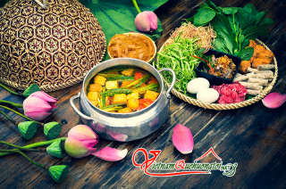
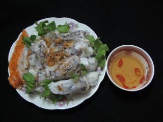
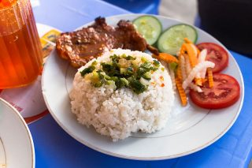
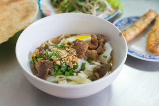

Ẩm thực Việt Nam là cách gọi của phương thức chế biến món ăn, nguyên lý pha trộn gia vị và những thói quen ăn uống nói chung của cộng đồng người Việt và các dân tộc thuộc Việt trên đất nước Việt Nam. Tuy có ít nhiều sự khác biệt, ẩm thực Việt Nam vẫn bao hàm ý nghĩa khái quát nhất để chỉ tất cả những món ăn phổ biến trong cộng đồng các dân tộc thiểu số nhưng đã tương đối phổ thông trong cộng đồng người Việt.
Trong văn hóa Việt Nam, ăn uống là cả một nghệ thuật, nó không chỉ nhằm đáp ứng yêu cầu cơ bản của con người mà còn có mối quan hệ mật thiết đến lối sống, truyền thống dân tộc, được thể hiện rất rõ qua những dụng cụ được dùng trong bữa ăn, cách ứng xử với mọi người trong khi ăn. Vì thế việc ăn uống còn minh chứng cho lịch sử và sự hình thành nền văn hoá của Việt Nam. Các món ăn qua từng giai đoạn nói lên được cuộc sống, con người của giai đoạn đó và của vùng đất – nơi đã sản sinh ra mỗi món ăn.
Đặc điểm theo vùng miền, dân tộc
Ẩm thực miền Bắc
Ẩm thực miền Bắc đặc trưng với khẩu vị mặn mà, đậm đà, thường không đậm các vị cay, béo, ngọt bằng các vùng khác, chủ yếu sử dụng nước mắm loãng, mắm tôm. Sử dụng nhiều món rau và các loại thủy sản nước ngọt dễ kiếm như tôm, cua, cá, trai, hến… và nhìn chung, do truyền thống xa xưa có nền nông nghiệp nghèo nàn, ẩm thực miền Bắc trước kia ít thịnh hành các món ăn với nguyên liệu chính là thịt, cá. Nhiều người đánh giá cao ẩm thực Hà Nội một thời, cho rằng nó đại diện tiêu biểu nhất của tinh hoa ẩm thực miền Bắc Việt Nam với những món phở, bún thang, bún chả, các món quà như cốm Vòng, bánh cuốn Thanh Trì… và gia vị đặc sắc như tinh dầu cà cuống, rau húng Láng.
Ẩm thực miền Nam
Ẩm thực miền Nam, có thiên hướng hảo vị chua ngọt, đây là nơi chịu ảnh hưởng nhiều của ẩm thực Trung Quốc, Campuchia, Thái Lan, có đặc điểm là thường cho thêm đường và hay sử dụng sữa dừa (nước cốt và nước dão của dừa). Nền ẩm thực này cũng sản sinh ra vô số loại mắm khô (như mắm cá sặc, mắm bò hóc, mắm ba khía…). Ẩm thực miền Nam cũng dùng nhiều đồ hải sản nước mặn và nước lợ hơn miền Bắc (các loại cá, tôm, cua, ốc biển), và rất đặc biệt với những món ăn dân dã, đặc thù của một thời đi mở cõi, hiện nay nhiều khi đã trở thành đặc sản: chuột đồng khìa nước dừa, dơi quạ hấp chao, rắn hổ đất nấu cháo đậu xanh, đuông dừa, đuông đất hoặc đuông chà là, vọp chong, cá lóc nướng trui…
Ẩm thực miền Trung
Đồ ăn miền Trung được biết đến với vị cay nồng, với tất cả tính chất đặc sắc của nó thể hiện qua hương vị riêng biệt, nhiều món ăn cay và mặn hơn đồ ăn miền Bắc và miền Nam, màu sắc được phối trộn phong phú, rực rỡ, thiên về màu đỏ và nâu sậm. Các tỉnh thành miền Trung như Huế, Đà Nẵng, Bình Định rất nổi tiếng với mắm tôm chua và các loại mắm ruốc. Đặc biệt, ẩm thực Huế do ảnh hưởng từ phong cách ẩm thực hoàng gia, cho nên rất cầu kỳ trong chế biến và trình bày. Một mặt khác, do địa phương không có nhiều sản vật mà ẩm thực hoàng gia lại đòi hỏi số lượng lớn món, nên mỗi loại nguyên liệu đều được chế biến rất đa dạng với trong nhiều món khác nhau.
Ẩm thực các dân tộc
Với 54 dân tộc sống trên nhiều vùng địa lý đa dạng khắp toàn quốc, ẩm thực của mỗi dân tộc trong cộng đồng các dân tộc Việt Nam đều có bản sắc riêng biệt. Rất nhiều món trong số đó ít được biết đến tại các dân tộc khác, như các món thịt lợn sống trộn phèo non của các dân tộc Tây Nguyên. Tuy nhiên, nhiều món ăn đã trở thành đặc sản trên đất nước Việt Nam và được nhiều người biết đến, như mắm bò hóc miền Nam, bánh cuốn trứng (Cao Bằng, Lạng Sơn), bánh coóng phù (bánh trôi dân tộc Tày, xuất xứ từ bánh trôi tàu của người Hoa), lợn sữa và vịt quay mắc mật (quả mặt), khâu nhục Lạng Sơn (ảnh hưởng từ Quảng Đông, Trung Quốc), phở chua, cháo nhộng ong, phở cốn sủi, thắng cố, các món xôi nếp nương của người Mường, thịt chua Thanh Sơn (Phú Thọ)…
Nguồn: https://vi.wikipedia.org/wiki/%E1%BA%A8m_th%E1%BB%B1c_Vi%E1%BB%87t_Nam